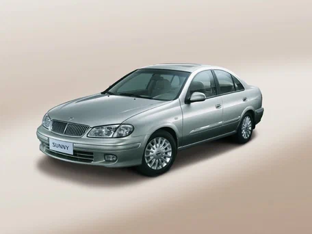
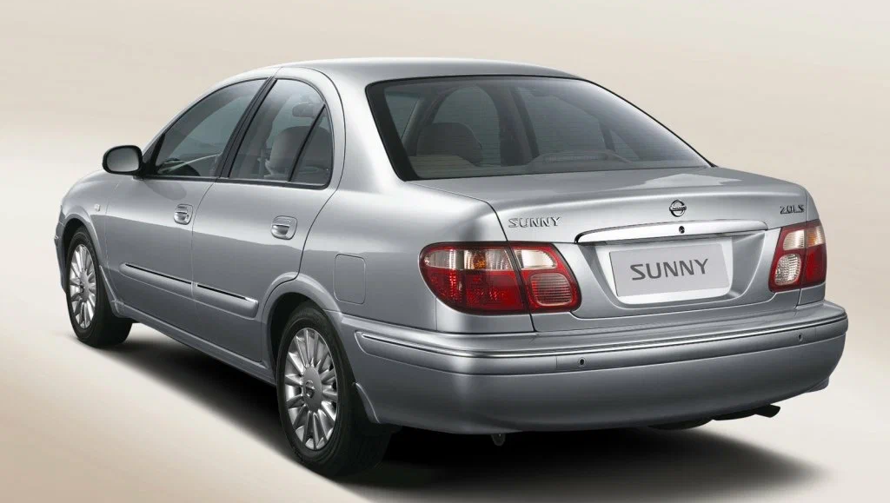

Марка топлива: АИ-92
Объем двигателя: 1270 см3
Мощность двигателя: 67 л.с.
Максимальный крутящий момент: 94.9 Н*м
Обороты максимального крутящего момента: до 3 400 об/мин
Тип двигателя: Бензиновый
Расположение цилиндров: Рядный
Тип впуска: Карбюратор
Наличие интеркулера: Есть
Количество цилиндров: 4
Количество клапанов на цилиндр: 4
Диаметр цилиндра: 76 мм
Ход поршня: 70 мм
Тип КПП: Автомат
Количество передач: 3
Привод: Передний
Количество мест: 5
Длина: 4050 мм
Ширина: 1620 мм
Высота: 1360 мм
Колёсная база: 2400 мм
Снаряженная масса: 745 кг
Передняя подвеска: Стойки МакФерсон
Задняя подвеска: Зависимая
Передние тормоза: Дисковые
Задние тормоза: Дисковые
Тип кузова: Седан